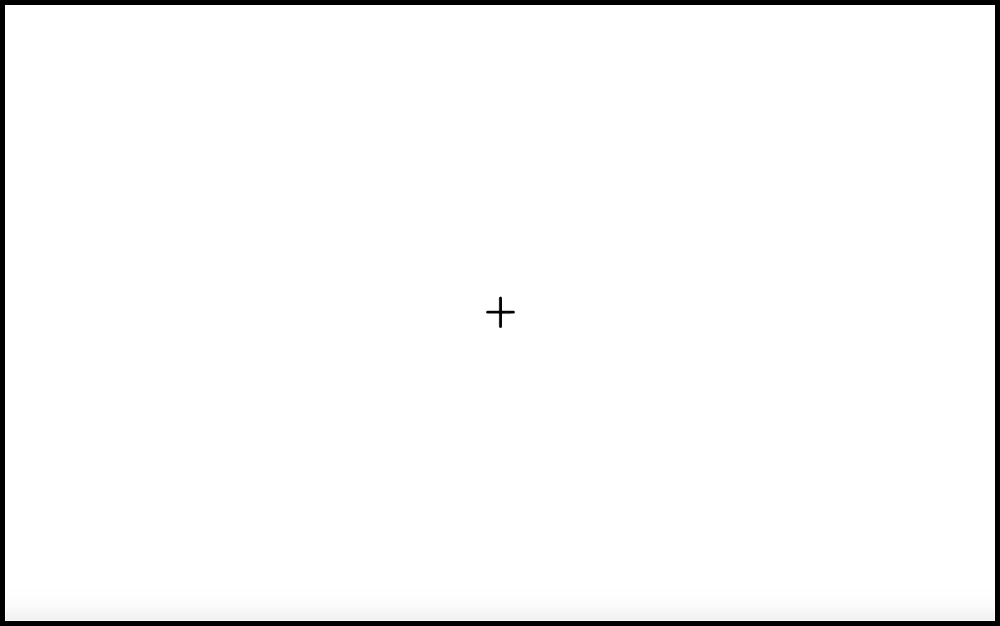
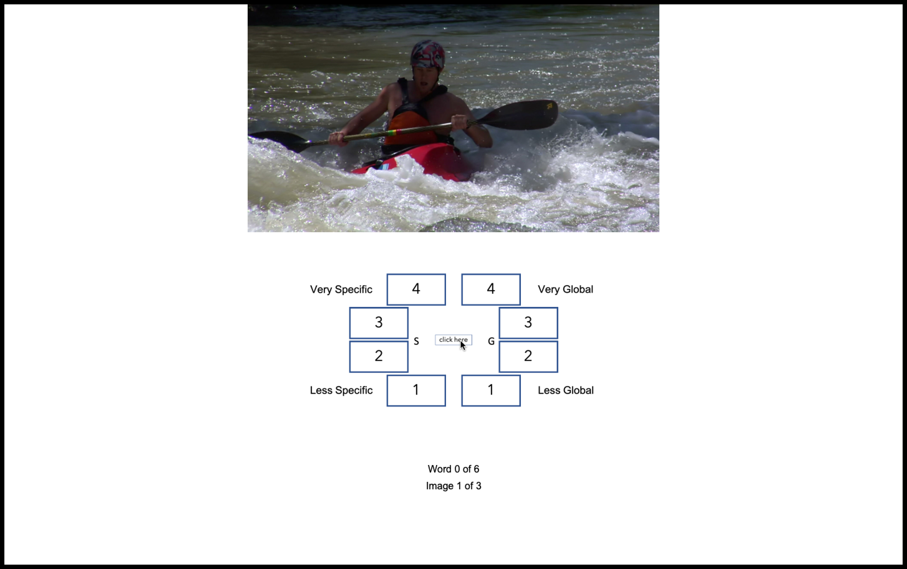
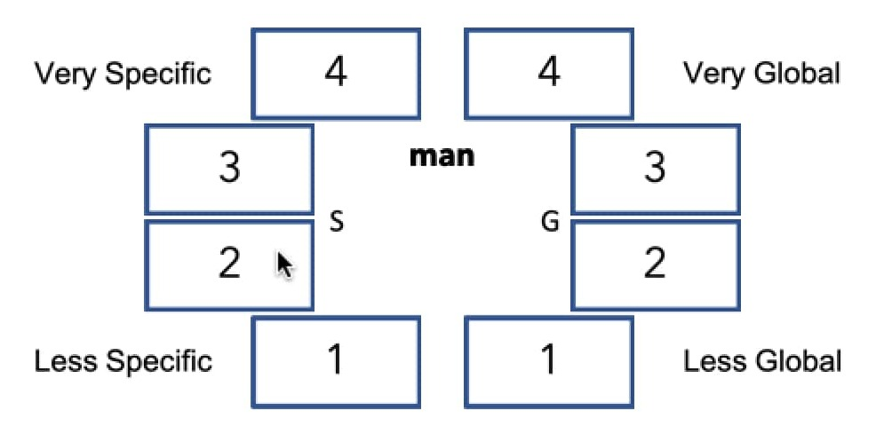
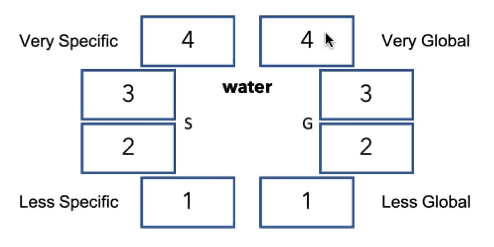

Instructions
Let's examine the experiment. Your task is to judge 6 descriptors for 40 images as global or specifc.
For your reference, here are the steps. (Scroll down for more details)
-
First, you will see a cross-hair at the center of the screen. Please focus on the cross and do not move your eyes.

-
After a few moments, an image and response screen will be displayed on the screen.
You must click the center button reveal the image descriptors.

-
Your task is to judge whether the word is a "global" or a "specific" descriptor of the image and to what degree. You should respond using the left responses to indicate a "specific" judgements. The right half is for "global" responses. The more strongly you feel about your response, the higher the number you should choose (Min = 1, Max = 4).
-
In the example below, the given word [ man ] seems like it is a more specifc decsriptor. You could choose response 2 on the left side to indicate this. Another word like [ water ] could be more global and you could choose 4 on the right side to indicate this.
Remeber it is just your impression, there is no right or wrong answer. Other words may be less clear, and will require your best judgement. Rely on your interpretation of the image to guide your answers.

When you press the [Space] bar, you will be given 3 practice trials.